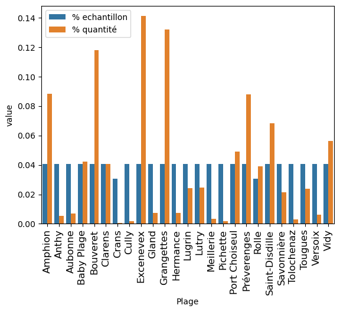
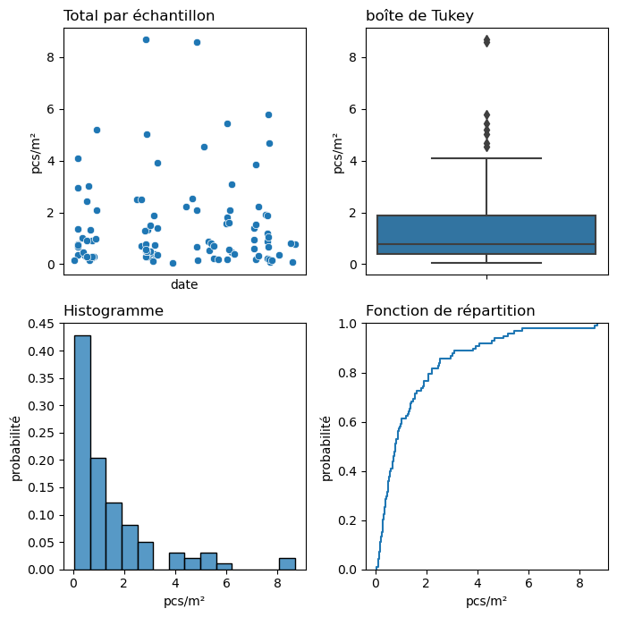
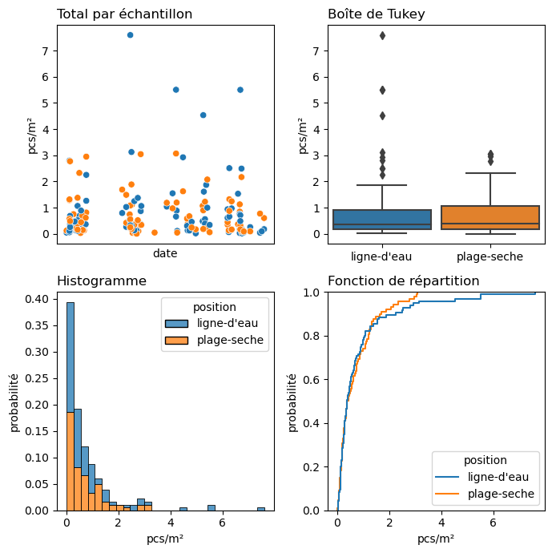
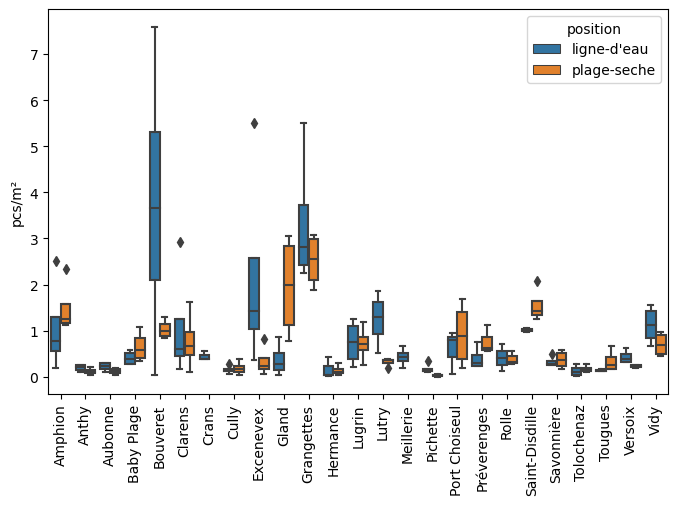

5. Annex : Macro plage et position#
Résultats agrégés par objet, position et échantillon
| Plage | position | code | quantite | echantillon | |
|---|---|---|---|---|---|
| 0 | Amphion | 1 | G24 | 2 | ('amphion', '01.02.2022') |
| 1 | Amphion | 2 | G24 | 42 | ('amphion', '01.02.2022') |
| 79 | Amphion | 2 | G66 | 7 | ('amphion', '01.02.2022') |
| 116 | Amphion | 2 | G131 | 1 | ('amphion', '01.02.2022') |
| 140 | Amphion | 1 | G31 | 2 | ('amphion', '01.02.2022') |
5.1. Nombre cumulé d’échantillons et particules par plage#
| echantillon | quantite | % echantillon | % quantité | |
|---|---|---|---|---|
| Amphion | 4 | 2459 | 0.04 | 0.09 |
| Anthy | 4 | 149 | 0.04 | 0.01 |
| Aubonne | 4 | 193 | 0.04 | 0.01 |
| Baby Plage | 4 | 1179 | 0.04 | 0.04 |
| Bouveret | 4 | 3286 | 0.04 | 0.12 |
| Clarens | 4 | 1128 | 0.04 | 0.04 |
| Crans | 3 | 21 | 0.03 | 0.00 |
| Cully | 4 | 48 | 0.04 | 0.00 |
| Excenevex | 4 | 3931 | 0.04 | 0.14 |
| Gland | 4 | 206 | 0.04 | 0.01 |
| Grangettes | 4 | 3677 | 0.04 | 0.13 |
| Hermance | 4 | 201 | 0.04 | 0.01 |
| Lugrin | 4 | 670 | 0.04 | 0.02 |
| Lutry | 4 | 686 | 0.04 | 0.02 |
| Meillerie | 4 | 91 | 0.04 | 0.00 |
| Pichette | 4 | 49 | 0.04 | 0.00 |
| Port Choiseul | 4 | 1372 | 0.04 | 0.05 |
| Préverenges | 4 | 2448 | 0.04 | 0.09 |
| Rolle | 3 | 1090 | 0.03 | 0.04 |
| Saint-Disdille | 4 | 1908 | 0.04 | 0.07 |
| Savonnière | 4 | 592 | 0.04 | 0.02 |
| Tolochenaz | 4 | 78 | 0.04 | 0.00 |
| Tougues | 4 | 660 | 0.04 | 0.02 |
| Versoix | 4 | 176 | 0.04 | 0.01 |
| Vidy | 4 | 1571 | 0.04 | 0.06 |

| Plage | position | substrat | |
|---|---|---|---|
| 0 | Amphion | 1 | 4 |
| 9 | Baby Plage | 1 | 1 |
| 12 | Bouveret | 1 | 1 |
| 23 | Excenevex | 1 | 1 |
| 29 | Préverenges | 2 | 1 |
| 30 | Rolle | 2 | 1 |
| 31 | Saint-Disdille | 1 | 4 |
| 39 | Vidy | 2 | 1 |
| 46 | Grangettes | 1 | 1 |
| 94 | Port Choiseul | 2 | 3 |
5.2. Compte moyen par échantillon et plage#
| pcs/m² | |
|---|---|
| min | 0.05 |
| 25% | 0.38 |
| 50% | 0.78 |
| 75% | 1.89 |
| max | 8.68 |
| moyenne | 1.45 |
| écart-type | 1.69 |
| echantillon | moyenne | |
|---|---|---|
| Amphion | 4 | 2.56 |
| Anthy | 4 | 0.32 |
| Aubonne | 4 | 0.34 |
| Baby Plage | 4 | 1.05 |
| Bouveret | 4 | 4.77 |
| Clarens | 4 | 1.85 |
| Crans | 3 | 0.44 |
| Cully | 4 | 0.34 |
| Excenevex | 4 | 2.52 |
| Gland | 4 | 2.32 |
| Grangettes | 4 | 5.86 |
| Hermance | 4 | 0.26 |
| Lugrin | 4 | 1.46 |
| Lutry | 4 | 1.57 |
| Meillerie | 4 | 0.43 |
| Pichette | 4 | 0.20 |
| Port Choiseul | 4 | 1.36 |
| Préverenges | 4 | 0.97 |
| Rolle | 3 | 0.67 |
| Saint-Disdille | 4 | 2.56 |
| Savonnière | 4 | 0.70 |
| Tolochenaz | 4 | 0.30 |
| Tougues | 4 | 0.47 |
| Versoix | 4 | 0.60 |
| Vidy | 4 | 1.82 |

5.3. Comptes moyenne par position#
Ligne d’eau |
Plage seche |
||||||||||||||||||||||||||||||||
|---|---|---|---|---|---|---|---|---|---|---|---|---|---|---|---|---|---|---|---|---|---|---|---|---|---|---|---|---|---|---|---|---|---|
|
|
| pcs/m² | ||
|---|---|---|
| position | ligne-d'eau | plage-seche |
| Amphion | 1.07 | 1.49 |
| Anthy | 0.20 | 0.12 |
| Aubonne | 0.22 | 0.12 |
| Baby Plage | 0.40 | 0.65 |
| Bouveret | 3.74 | 1.03 |
| Clarens | 1.08 | 0.77 |
| Crans | 0.44 | 0.00 |
| Cully | 0.15 | 0.19 |
| Excenevex | 2.19 | 0.33 |
| Gland | 0.37 | 1.95 |
| Grangettes | 3.34 | 2.52 |
| Hermance | 0.16 | 0.14 |
| Lugrin | 0.74 | 0.72 |
| Lutry | 1.25 | 0.32 |
| Meillerie | 0.43 | 0.00 |
| Pichette | 0.17 | 0.03 |
| Port Choiseul | 0.60 | 0.91 |
| Préverenges | 0.40 | 0.77 |
| Rolle | 0.41 | 0.39 |
| Saint-Disdille | 1.02 | 1.55 |
| Savonnière | 0.33 | 0.37 |
| Tolochenaz | 0.12 | 0.17 |
| Tougues | 0.14 | 0.34 |
| Versoix | 0.43 | 0.23 |
| Vidy | 1.12 | 0.70 |

5.3.1. Distributions#
